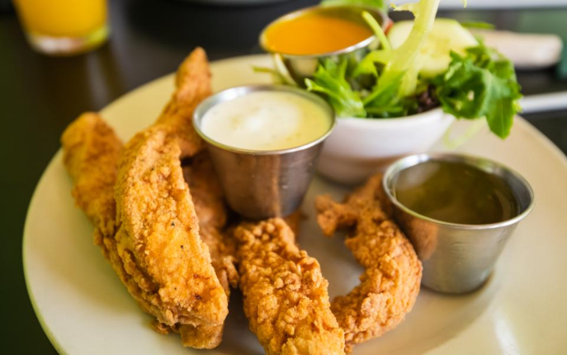
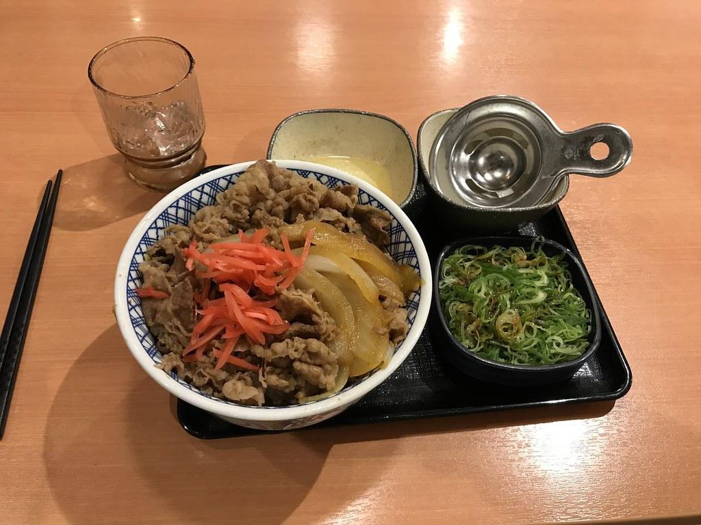
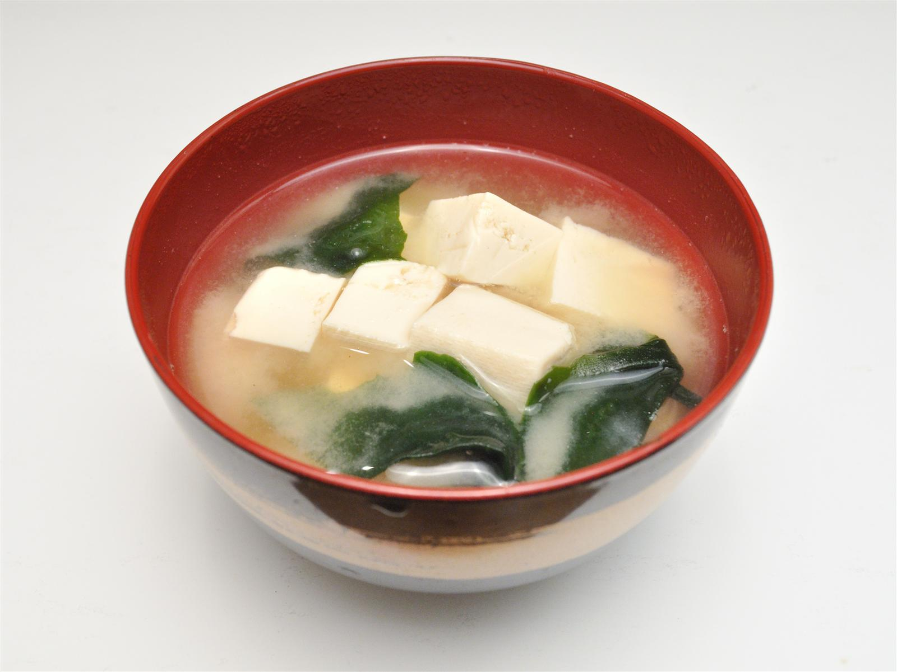
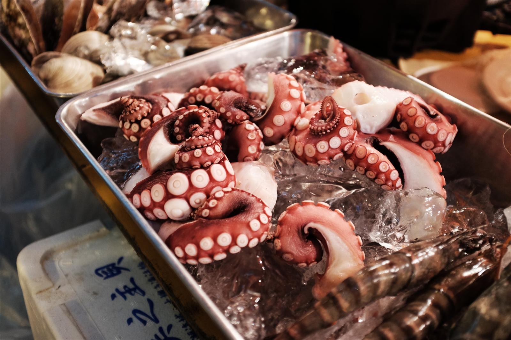

ボリューム満点の定食が評判のお店です。
味菜十食堂の定食は、どれも食べ応えのあるボリュームが自慢です。看板のチキン南蛮定食をはじめ、家庭的な味わいの一品をご用意しています。

鶏もも肉を5〜6個、大ぶりにボリューム満点で使用。噛むたびにジューシーな旨みが広がります。自家製タルタルソースは、粗みじんの玉子をしっかり感じる仕立て。甘酸っぱい黒酢系のタレは別添えでご用意しており、そのままの味わい・タレをかけた味わい・レモンを絞った爽やかな味わいと、3通りの楽しみ方ができます。ご飯にのせて、チキン南蛮丼として召し上がる楽しみ方もあるようです。ご飯・みそ汁・小鉢2種・漬物付き。

チキン南蛮と並んで人気を集める一品。味・ボリュームともに評判です。

切り干し大根、オクラと豆腐の冷奴など、家庭的な小鉢が定食に付きます。出汁の香りが良いみそ汁と漬物も、ほっとする味わいです。

直江津という立地から、日本海の魚介を使ったメニューもご用意しているようです。詳しくは店頭またはお電話でご確認ください。